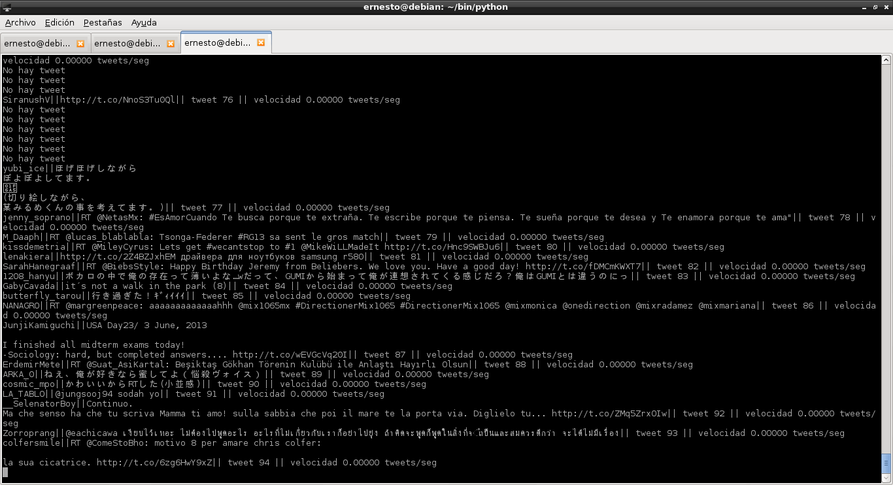

Utilizando el API de Stream de Twitter con Python y tweetstream. Parte 1.
Posted on mar 04 junio 2013 in Tutorial Python • 2 min read
Siguiendo con los artículos de Twitter con Python, ahora mostraré como usar el API Stream de Twitter.
En este caso como la librería twitter no maneja stream es necesario instalar otra librería llamada tweetstream.
La documentación del API Stream de twiitter se encuentra en el enlace, y en específico para obtener información objeto tweets lo pueden revisar en el enlace.
Ahí encontrarán la estructura json de este objeto. El campo que se uso en el ejemplo son 'text' y 'user', text contiene el texto del tweet y user contiene otro objeto que contiene información del usuario, para este caso se usará el campo 'screen_name' que maneja el nombre del usuario twitter que envía el tweet.
A continuación el código de la aplicación:
#!/usr/bin/env python
# -*- coding: utf-8 -*-
#Import tweetstram, sleep y exit
import tweetstream
from time import sleep
from sys import exit
#Se crea la funcion StreamTweet donde se le pasa el usuario y la clave de una cuenta twitter.
def StreamTweet(usuario,clave):
#Se captura la excepcion de error de conexion e interrupcion por teclado
try:
#Se intenta conectar a la funcion de stream de tweetstream con el usuario y la clave
#Asignando a stream el resultado
with tweetstream.TweetStream(usuario,clave) as stream:
#Se genera un ciclo de cada tweet
for tweet in stream:
#Se captura la excepcion de KeyError e Interrupcion de teclado, de esa forma
#Se devuelve un mensaje de error y se termina el programa respectivamente.
try:
#Se crea un texto con el numero de tweet y la velocidad de cada tweet.
adicional = "|| tweet %d || velocidad %.5f tweets/seg" %(stream.count,stream.rate)
#Se crea un texto final donde se le pasa el nombre del usuario que envia el tweet,
#el texto del tweet y el texto anterior
texto = tweet['user']['screen_name'] + "||" + tweet['text'] + adicional
#Se imprime dicho texto en pantalla
print texto
except KeyError:
print "No hay tweet"
except KeyboardInterrupt:
exit()
#Se espera 5 segundos para continuar al siguiente ciclo del lazo
sleep(5)
except tweetstream.ConnectionError, e:
print "Desconectado de twitter. Razon: ", e.reason
exit()
except KeyboardInterrupt:
exit()
if __name__ == '__main__':
#Se llama a la funcion pasando el usuario y la clave.
StreamTweet(usuario,clave)
En la siguiente figura se muestra la captura de pantalla del programa en funcionamiento:

Se muestra en cada tweet, el usuario que envía el tweet, el tweet en si, el número de tweet enviado y la velocidad con que se envía el tweet.
¡Haz tu donativo! Si te gustó el artículo puedes realizar un donativo con Bitcoin (BTC) usando la billetera digital de tu preferencia a la siguiente dirección: 17MtNybhdkA9GV3UNS6BTwPcuhjXoPrSzV
O Escaneando el código QR desde la billetera: